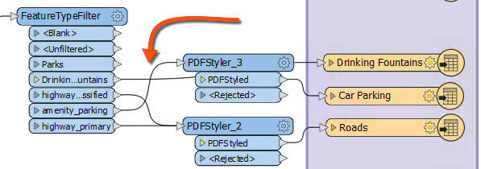
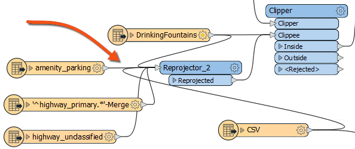
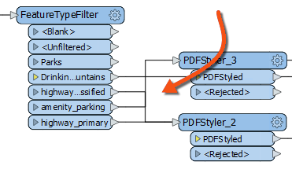
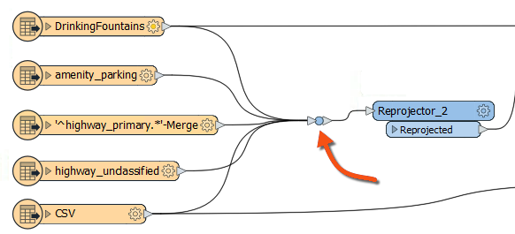
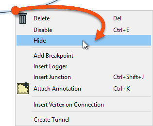

After completing this lesson, you’ll be able to:
Object positioning is only part of a good layout. The other essential part is the connection style.
As with the positioning of workspace objects, the care taken in connecting them can make the difference between a poorly designed workspace and one visually attractive and efficient.
Connections are the lines between objects on the workspace canvas. There are three different styles of connection that you can create in Workbench:
You can switch between styles in the FME Options menu (Tools > FME Options > Appearance > Canvas > Connection Path) or the shortcut Ctrl+Shift+C. This image shows a comparison of the three styles:
Once more, there is no right or wrong choice about which style to use; it is a personal preference. However, object layout and connection style are related; the best FME authors will vary the objects' position according to the connection style used to avoid issues like overlapping connections.
You can also use custom connection styles to highlight certain connections in your workspace and give you more control over the appearance of your connections. For example, you can color-code connections based on what data they contain or change connection thickness based on estimated data volume.

Select a connection line by clicking it (or Ctrl/Cmd, clicking multiple lines) to change a connection style. Then right-click a selected line and choose Properties...

From here, you can change connection styles.

Use custom connection styles to make it easier to trace particular features through your workspace. You can use this while debugging or for others to make workspaces more readable. Just ensure you include some kind of legend or explanation for your custom styles, for example, in annotation or workspace documentation.
One of the most conspicuous failings of a workspace design is to have connections that cross over each other, for example like this:

The intent of a connection is compromised when it overlaps with another connection or object on the canvas. However, the choice of connection style affects the possibility of overlap occurring. For example, curved connections tend to cross over more than straight ones:

...and squared connections can sometimes cross in ways that are difficult to decipher:

Because these issues can spring up when you switch connection styles, it's wise to choose a particular connection style and layout technique and stick with it. For example, transformers should be widely spaced in a curved connection workspace to avoid overlaps.
You can change port order to avoid overlapping connections by right-clicking a port and choosing Move Up or Move Down.

However, laying out the workspace to avoid overlaps in the first place is ideal if you can manage it.
Compare these two options. While both manage to avoid overlapping connections, layout #1 on the top is better because it uses the default port order:

If you work with large workspaces, you'll often scan the zoomed-out workspace, looking for a particular section. Once you find a section you are interested in, you can right-click a connection you'd like to zoom to, then click Zoom to Connection.

You can do this with transformers and feature types, too.
One transformer in FME Workbench enhances the layout of objects and connections: the Junction.

This transformer is a small, node-like object that does not function on the data but is used to tidy connections within a workspace - as in the above screenshot. This trait makes it an excellent tool for best practice.
As with any other transformer, you can connect a junction to an Inspector or Logger and attach annotation objects. It also works with Quick Add, Drag/Connect functionality, and Feature Caching.
The ability to hide connections is handy for avoiding overlaps. To hide a connection, right-click on it and choose the option to Hide:

A hidden connection is represented by a 'transmitter' icon or by a greyed-out dashed line when the object at one end of the connection is selected:

You must select the object (transformer or feature type) to make the connection visible. It is best to hide connections you consider less critical and don't want the user to see by default.
The other available option is "Create Tunnel." This choice creates a hidden connection with the addition of an annotated junction transformer at each end:

A tunnel makes a hidden connection slightly more apparent, plus allows for annotation at each end. Tunnels help connect across a large workspace without requiring the user to follow a long connection line.
To view hidden connections, click on an object at either end. The connection appears as a greyed-out dashed line.
To return a connection to view, right-click an object to which it is connected and choose Show Connection(s).
For more information on Tunnels and Junctions, see this blog post.